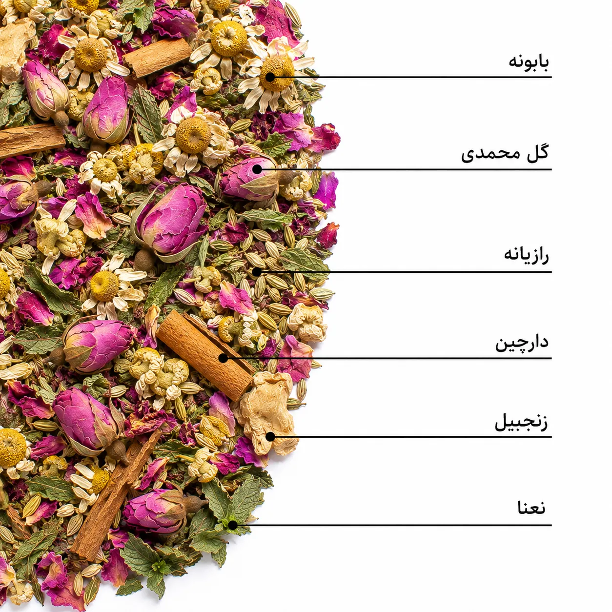

بابونه
پایه اصلی فرمول؛ با رایحهای گلی و ملایم و نقشی مهم در ایجاد حس آرامش.
ماه بانو ترکیبی متعادل از گیاهان منتخب است که با هدف ایجاد یک نوشیدنی گرم، خوشعطر و دلنشین برای روزهای قاعدگی طراحی شده است.
بابونه، رازیانه، گل محمدی، زنجبیل، دارچین و نعنا در کنار هم، طعمی گرم و ملایم با رایحهای طبیعی و شخصیت مشخص میسازند.

بعضی روزهای ماه، بدن به کمی آرامش و مراقبت بیشتر نیاز دارد.
ماه بانو با الهام از طبیعت و با انتخاب دقیق گیاهان خوشعطر و خوشطعم، برای همراهی با روزهای قاعدگی ساخته شده است؛ یک فنجان گرم برای لحظهای مکث، آرامش و حال بهتر.
در این فرمول تلاش کردهایم میان طعم، عطر و کاربرد گیاهان تعادل برقرار کنیم؛ بدون اینکه طعم یک گیاه، شخصیت سایر ترکیبات را پنهان کند.
ماه بانو دارو نیست؛ یک دمنوش گیاهی است که میتواند در کنار مراقبتهای معمول و سبک زندگی سالم، همراه خوشایندی برای شما باشد.
پایه اصلی فرمول؛ با رایحهای گلی و ملایم و نقشی مهم در ایجاد حس آرامش.
با رایحهای شیرین و گیاهی؛ برای تکمیل طعم و همراهی با ناراحتیهای گوارشی و نفخ.
برای لطافت عطر و طعم و افزودن یک نت گلی و ظریف به ترکیب.
ایجاد گرمای دلنشین و یکی از ترکیباتی که برای کمک به کاهش درد قاعدگی مطالعه شده است.
ایجاد رایحه گرم و ادویهای و تکمیلکننده شخصیت طعمی ماه بانو.
مقدار کم و هدفمند برای ایجاد طراوت و کمک به متعادل شدن پایان طعم.
ملایم و گلی
گرم و کمی ادویهای
لطیف و کمی تازه
گلی، گرم و گیاهی
پیشنهاد برگین: ماه بانو را ابتدا بدون شیرینکننده امتحان کنید تا رایحه و طعم طبیعی ترکیبات را بهتر احساس کنید.
بابونه به دلیل ترکیبات زیستفعال خود برای آرامش و اسپاسمهای عضلانی مورد مطالعه قرار گرفته است. برخی مطالعات انسانی نیز کاهش شدت درد قاعدگی را گزارش کردهاند؛ با این حال میزان اثر در افراد مختلف متفاوت است.
رازیانه بهطور سنتی برای ناراحتیهای گوارشی و نفخ استفاده میشود و در برخی مطالعات انسانی برای کاهش شدت درد و گرفتگیهای قاعدگی نیز بررسی شده است.
زنجبیل از ترکیبات گیاهی است که شواهد انسانی نسبتاً بیشتری برای کمک به کاهش درد قاعدگی دارد. اثر آن در پژوهشها بیشتر در روزهای ابتدایی قاعدگی بررسی شده است.
دارچین بهدلیل ترکیبات معطر و زیستفعال خود برای علائم قاعدگی در برخی مطالعات انسانی بررسی شده است. در ماه بانو علاوه بر این نقش احتمالی، برای ایجاد گرما و عمق طعمی استفاده شده است.
گل محمدی سرشار از ترکیبات معطر و آنتیاکسیدانی است و در پژوهشها اثرات احتمالی آن بر آرامش، خلقوخو و برخی علائم قاعدگی بررسی شده است. نقش مهم آن در این فرمول، لطافت عطر و طعم نیز هست.
نعنا بیشتر برای ایجاد طراوت و کمک به هضم و احساس سبکتر پس از نوشیدن انتخاب شده است. مقدار آن در فرمول عمداً پایین نگه داشته شده تا تندی آن بر طعم ماه بانو غلبه نکند.
یک تیبگ ماه بانو را داخل فنجان قرار دهید.
۲۰۰ تا ۲۵۰ میلیلیتر آب داغ با دمای حدود ۹۰ تا ۹۵ درجه سانتیگراد اضافه کنید.
حدود ۵ تا ۷ دقیقه اجازه دهید تیبگ دم بکشد.
تیبگ را خارج کنید و دمنوش را گرم میل نمایید.
در صورت سازگاری فردی، میتوانید از چند روز پیش از شروع قاعدگی مصرف را آغاز کنید.
در روزهای ابتدایی قاعدگی، یک فنجان گرم میتواند همراهی دلنشین برای زمان استراحت باشد.
برای بزرگسالان سالم، روزانه ۱ تا ۲ فنجان پیشنهاد میشود.
در مقدار معمول مصرف، انتظار نمیرود این دمنوش در افراد سالم تغییر قابل توجهی در فشار خون ایجاد کند. با این حال زنجبیل و دارچین ممکن است در برخی افراد اثر کاهنده خفیفی داشته باشند.
اگر داروهای رقیقکننده یا ضدانعقاد خون، داروهای فشار خون، داروهای دیابت یا داروهای آرامبخش مصرف میکنید، پیش از مصرف منظم با پزشک یا داروساز مشورت کنید.
مقدار پیشنهادی برای بزرگسالان سالم ۱ تا ۲ فنجان در روز است. مصرف بیشتر یا طولانیمدت، بهویژه در صورت بیماری زمینهای یا مصرف دارو، بهتر است با نظر متخصص انجام شود.
ماه بانو دارو نیست و جایگزین تشخیص یا درمان پزشکی محسوب نمیشود.
چند دقیقه از شلوغی روز فاصله بگیر.
فنجانت را آماده کن.
عطر گیاهان را نفس بکش.
و کمی بیشتر به خودت فرصت بده.
گاهی کافیست چند دقیقه از شلوغی روز فاصله بگیری...
فنجانی ماه بانو دم کنی،
عطر گیاهان را نفس بکشی و اجازه بدهی لحظهای برای خودت آرامتر بگذرد.
ما ماه بانو را برای همین لحظههای کوچک ساختیم؛ برای روزهایی که بیشتر از همیشه به کمی گرما، آرامش و مراقبت نیاز داری.
یک فنجان برای خودت،
یک لحظه برای آرامش. 🌸
ماه بانو را دم کن، چند دقیقه از شلوغی فاصله بگیر و لحظهات را آرامتر زندگی کن.
خرید ماه بانو